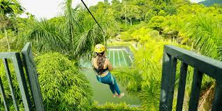
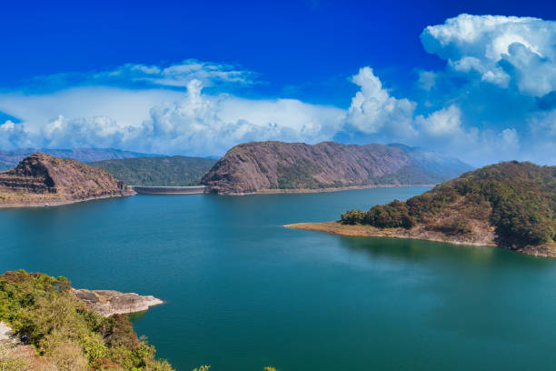

Wayanad is a district in the north-east of the Indian state of Kerala, with administrative headquarters at the municipality of Kalpetta. It is the only plateau in Kerala.The Wayanad Plateau forms a continuation of the Mysore Plateau, the southern portion of Deccan Plateau which links the Western Ghats with the Eastern Ghats. It is set high in the Western Ghats with altitudes ranging from 700 to 2,100 meters. Vellari Mala, a 2,240 m (7,349 ft) high peak situated on the trijunction of Wayanad, Malappuram, and Kozhikode districts, is the highest point in Wayanad district. The district was formed on 1 November 1980 as the 12th district in Kerala, by carving out areas from Kozhikode and Kannur districts.
Let's see some views in Wayanad

